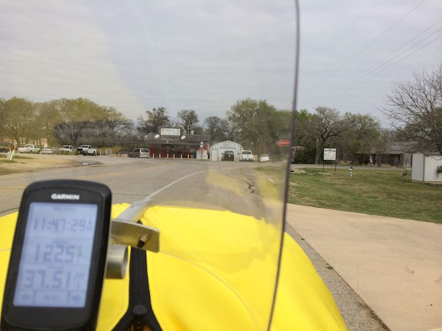
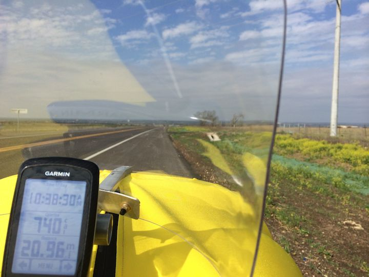

F-40 Easy ride to Andice for lunch w/Robyn
24 Mar 2014
Took a nice easy ride today to Andice to meet Robyn for lunch.
Still a little tired from Saturday’s ride. Tried to keep the heartrate under 120 and peddle easy the whole time.
The Marathon Supreme tires are definitely slower than the Kojaks.
Was a little cold when I started - in the mid 40s. Not a single other cyclist on the road today.

